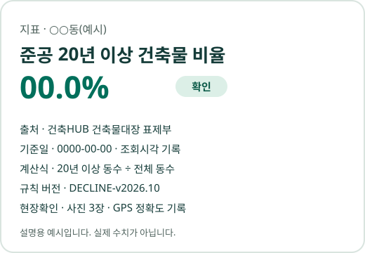

법정 요건 확인
어떤 조문과 판본을 썼는지, 리뉴맵 내부 승인(기관 판단 아님)을 마쳤는지 확인하세요.
결과는 참고 계산이며, 판정은 담당 기관이 합니다.
최종 판단은 담당 기관에 확인해야 합니다.
숫자의 뜻과 확인 범위를 먼저 보세요.
노후 건물의 비율과 인구 변화만으로 동네의 모든 모습을 설명할 수는 없습니다.
어떤 조문과 판본을 썼는지, 리뉴맵 내부 승인(기관 판단 아님)을 마쳤는지 확인하세요.
결과는 참고 계산이며, 판정은 담당 기관이 합니다.
최종 판단은 담당 기관에 확인해야 합니다.
인구·사업체·생활시설은 서로 다른 현황입니다.
시설 위치와 실제 개방 여부도 구분해야 합니다.
행정동 통계를 특정 건물이나 주민의 사실로 해석하지 마세요.
동네 현황 살펴보기도시재생활성화지역은 인구, 사업체, 노후건축물 세 요건 가운데 2개 이상을 갖춰야 지정할 수 있습니다(도시재생법 제13조).
인구 요건은 최근 30년 중 가장 많던 때보다 20% 이상 줄었거나, 최근 5년 중 3년 이상 연속으로 줄어든 경우입니다.
사업체 요건은 최근 10년 중 가장 많던 때보다 5% 이상 줄었거나, 최근 5년 중 3년 이상 연속으로 줄어든 경우입니다.
노후 요건은 준공 후 20년 이상 지난 건축물이 전체의 50% 이상인 경우입니다(같은 법 시행령 제17조, 원문 확인 2026-11-19).
리뉴맵에 동 이름을 넣으면 세 값을 출처·기준일과 함께 보여 줍니다.
판정이 아니며 최종 확인은 담당 기관이 합니다.
연구 참고: 이정은 외(2023), 한국형 축소도시의 정의와 진단(KCI 등재).
진단 기준과 공간 범위를 함께 봐야 한다는 점을 따랐습니다.
값과 출처를 함께 읽고, 계산을 다시 해도 같은 값이 나오는지 확인합니다.
같은 자료로 같은 값이 나오는 것은 재현성입니다.
출처 자료나 계산식이 틀리면 같은 오류가 반복될 수도 있습니다.
정확성은 원문·수기 계산·현장 자료와 따로 대조해야 합니다.
연구 참고: Wilkinson 외(2016), FAIR 원칙 · Peng(2011), 계산 연구의 재현성.
데이터 관리와 검증 설계에 참고했습니다.
2026년 보강: Ponciano 외(2026), 공간 메타데이터 품질을 항목별로 평가하는 방법을 참고했습니다.
출처가 있다는 사실과 정확성 검증을 구분합니다.
기준일 비교에서는 단위·산식·규칙·공간단위·출처 근거가 없거나 바뀌면 수치 차이 계산을 보류합니다.
제출 서류에는 숫자의 출처 기관과 리뉴맵의 계산을 나눠 적어 주세요.
제공 기관의 원자료입니다. 기관명·자료명·기준일·원문 주소를 적습니다.
제출 서류의 출처는 이 기관으로 적습니다.
공식 자료로 낸 계산·비교입니다. 계산식·규칙 버전·승인 상태를 함께 적습니다.
규칙 승인은 리뉴맵 내부 검토이며 기관 판단이 아닙니다.
조사자가 남긴 사진·메모와 확인일입니다.
사실 확인과 가림 확인은 조사자가 합니다.
인용 예시: [행정동] [지표 이름] [값](기준일 [YYYY-MM-DD], 출처: [제공 기관] [자료명], 이용허락범위 [이용허락범위]). 리뉴맵 참고 계산 · 규칙 버전 [규칙 버전] · 셀 ID [셀 ID] · 출처 색인 지문 [snapshot_hash]. 판정이 아니며 최종 확인은 담당 기관이 합니다.
출처·기준일 부분의 실제 예시는 동 페이지의 인용 한 줄에서 볼 수 있습니다.
문서 확인값은 같은 입력으로 만든 문서인지 대조할 뿐, 내용이 사실인지는 증명하지 않습니다.
리뉴맵은 판정·인증 도구가 아니라 근거를 정리하는 도구입니다.
숫자의 출처 기관으로 리뉴맵을 적지 말고 원자료 기관을 출처로, 리뉴맵은 정리·계산 도구로 적어 주세요.
공식 승인·법적 효력·공모 선정을 보장하지 않습니다.
기록한 대상, 관찰 시각, 실제 위치를 함께 대조하세요.
휴대전화가 표시하는 위치 정확도와 실제 대상까지의 오차는 다를 수 있습니다.
골목·고층 건물 주변에서는 사진 속 대상과 지도 위치를 다시 맞춰 보세요.
지도에 시설이 있어도 현재 개방 중이라는 뜻은 아닙니다.
운영시간·출입구·이용 장벽과 확인한 날짜를 기록하세요.
판단하기 어려운 항목은 추가확인으로 남깁니다.
파일 확인값(SHA-256)은 파일이 바뀌었는지만 알려 줍니다. 내용이 사실인지, 기관이 승인했는지는 증명하지 않습니다.
사진 내용이 사실이거나 법적 증거력이 있다는 보증은 아닙니다.
연구 참고: Goodchild·Li(2012), 참여형 공간정보 품질보증 · 장우연·조선(2024), 도시재생 거점시설 운영 연구.
리뉴맵 기기별 위치 오차와 현장 기록 정확도는 별도 실측 대상입니다.
직선거리는 두 지점 사이를 바로 잰 거리입니다.
실제 보행은 계단·경사·횡단시설·출입구의 영향을 받습니다.
지도에 나온 거리의 계산 방법부터 확인하세요.
이동시간만으로 서비스 이용을 보장할 수는 없습니다.
운영시간, 이용 대상, 시설의 수용량을 따로 확인해야 합니다.
직선거리, 도보, 차량 분석은 서로 다른 지표입니다.
계산에 쓴 도로망·기준시각·속도 가정이 다르면 결과도 달라질 수 있습니다.
연구 참고: 강성원·문태헌(2024), n분 도시 계획을 위한 생활SOC 접근성 분석(KCI 등재).
창원 사례의 수치는 부산 기준으로 옮겨 쓰지 않았습니다.
촬영일·모델 출처·좌표와 위치를 확인하세요.
가려진 부분이나 빠진 건물이 있을 수 있습니다.
사진에서 생성한 보이지 않는 면은 실측 사실로 볼 수 없습니다.
건물·조형물의 배치와 시간에 따른 단계를 비교합니다.
가정한 치수·배치·일정은 실제 관측과 구분합니다.
시각화가 인허가나 공학적 검토를 대신하지는 않습니다.
연구 참고: Lei 외(2023), 도시 디지털 트윈의 과제 · Boje 외(2020), 건설 디지털 트윈의 연구 방향.
실제 상태의 갱신·데이터 연결·목적별 검증이 추가로 필요합니다.
기관 보고서 참고: NIST IR 8356(2025), 디지털 트윈의 보안과 신뢰.
갱신 시점·사용 목적·실제 대상과의 대조를 나누는 설계에 참고했습니다.
문헌은 조사와 검증의 방법을 정하는 데 사용합니다.
각 주제의 연구 링크에서 방법과 적용 범위를 확인할 수 있습니다.
다른 지역의 연구 결과나 지표를 이 동네의 사실 또는 법정 기준으로 곧바로 적용하지 않습니다.
일부는 초록·서지 중심으로 확인했습니다.
모든 전문을 정독하거나 출처 자료를 재현한 것은 아닙니다.
문헌 인용은 리뉴맵의 정확도나 시간 절감 효과를 인증하지 않습니다.
실제 과업에서 측정한 결과가 있어야 성능을 설명할 수 있습니다.
참고: IJGIS(2026)의 재현 가능성 감사(공개 자료 평가).
리뉴맵도 자료·코드 공개, 재계산 시험, 원문·현장 대조를 따로 확인합니다.
화면과 문서에 쓰는 공공데이터 값마다 출처·기준일·계산식이 따라갑니다. 출처가 없는 가정값은 가정이라고 적습니다.
따라가서 확인할 수 있어야 근거입니다. 같은 자료로 다시 만들면 같은 문서가 나옵니다.
자료로 정할 수 없는 건물은 '현장 확인'으로 남깁니다.
빈칸을 추정으로 채우지 않고, 확인하지 못한 것은 범위와 이유로 보여 드립니다.
기준 비교는 법정 판정·기관의 판단을 대신하지 않습니다.
규칙 원문 대조 전과 자료 부족을 구분해 표시하고, 담당자가 최종 검토합니다. 규칙별 원문·승인 상태
기록·사진은 기기에 저장하고, 전달은 사용자가 선택합니다.
얼굴, 번호판, 건물 이름 속 개인 이름은 직접 확인하고 가려 주세요. 지도·필지 조회에는 위치 정보가 외부 서비스로 전달됩니다. 처리 경로와 개인정보 안내
근거를 만드는 쪽이 거래로 돈을 벌지 않아야 그 근거를 믿을 수 있습니다.
값 뒤에 출처, 기준일, 계산식, 규칙 판본, 확인 상태가 줄지어 나옵니다.
자료가 모자란 칸은 비워 둔 채 이유를 적습니다.
